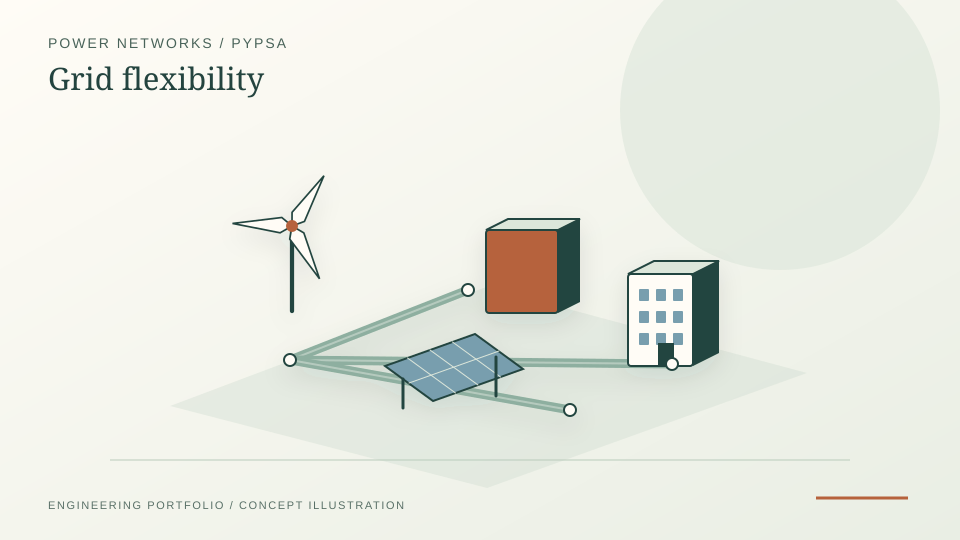

Open methods, inspectable code, and explicit limits. The case studies distinguish numerical verification, coursework and exploratory modelling from real-system validation.
 View case study →01
View case study →01Energy Systems · 2026
Diagnosis-first study of Kerala's electricity-system stress combining audited SLDC history, ERA5-sensitive demand reconstruction, hydro-timing sensitivities, transfer constraints, public-network screening, PyPSA/OSeMOSYS checks and ecological feasibility work. Screening evidence is kept separate from observed data and validated planning claims.
Python · PyPSA · OSeMOSYS · ERA5 · HiGHS · GIS · pytest
 View case study →02
View case study →02Thermal Systems · 2026
Techno-economic screening of industrial thermal energy storage with state-of-charge-dependent discharge constraints derived from dynamic models. Packed-bed, molten-salt and PCM cases are compared with explicit verification, sensitivity and validation boundaries.
Python · Pyomo · HiGHS · Modelica · FMI/FMPy · SALib
 View case study →03
View case study →03Energy Systems · 2026
An open-source two-boiler steam-and-power twin with a carbon-aware Pyomo/HiGHS scheduler, OpenModelica FMI 2.0 simulation and a local Streamlit advisory GUI. Synthetic and uncalibrated; not an ABB product or live control system.
Python · Modelica · Pyomo · HiGHS · FMI/FMPy · Streamlit · pytest
 View case study →04
View case study →04Energy Systems · 2026
Local electricity-investment GUI and shared Pyomo/HiGHS planner, with audited market coverage and 175 extracted public input references. Synthetic and uncalibrated; normalization, price-target decisions and weather conversion still gate historical fitting.
Python · Pyomo · HiGHS · Streamlit · NumPy · pytest
 View case study →05
View case study →05Thermal Systems · 2026
How do degradation and thermal transients affect a gas turbine? A Make-built educational simulator checked against hand calculations, an analytical transient and repeatable sensor-noise tests. Not commercial-engine validation.
Fortran 2008 · Python · Win32/GDI+

View case study →06Energy Systems · 2026
How do corridor limits and flexibility change dispatch? A Netherlands-inspired screening model with hand-checkable congestion and storage tests. Synthetic topology; not a validated Dutch grid.
PyPSA · Linopy · HiGHS · Streamlit · Python